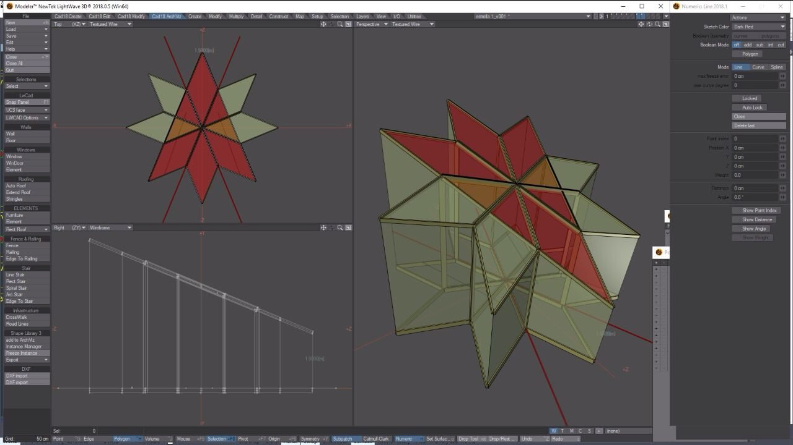
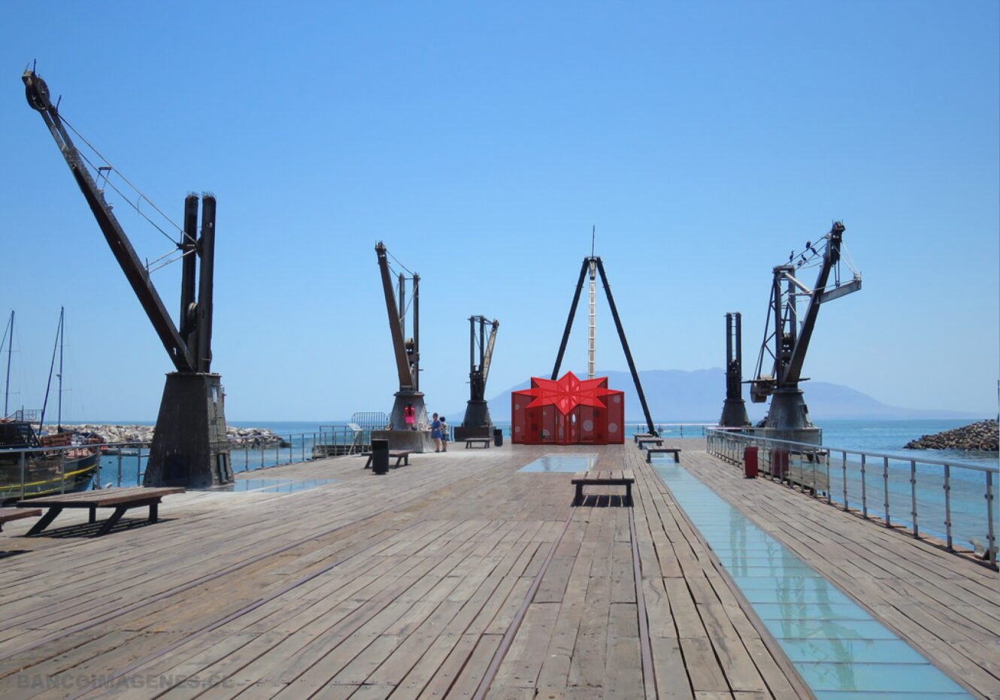
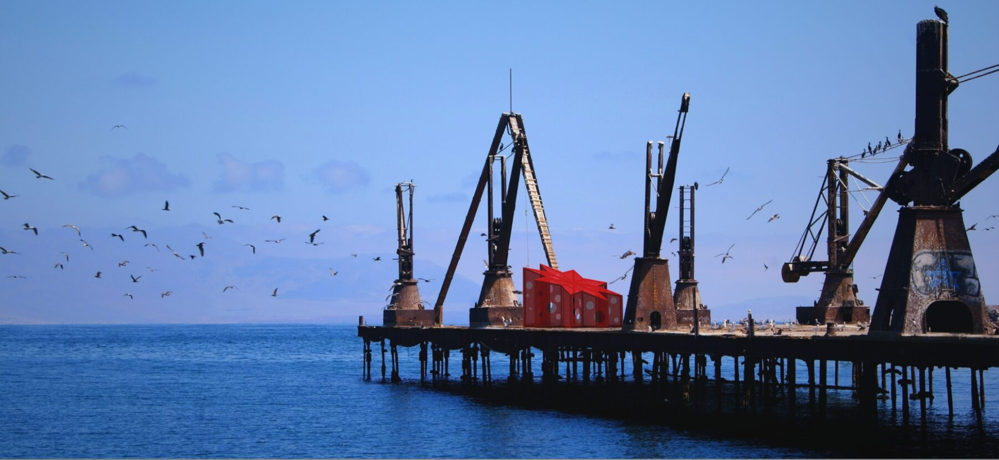
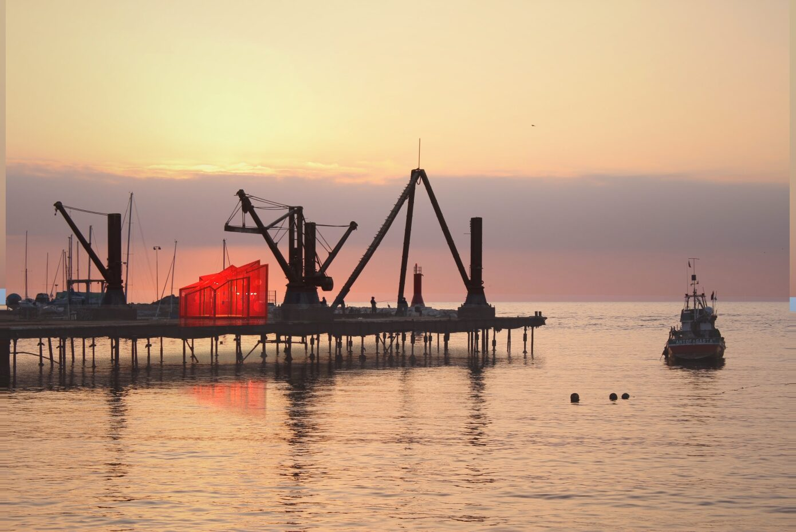

Proyecto Nº 005
El Allegado Nº10 / La Estrella de Chile
Proyecto presentado para el concurso SACO 8, para una instalación transitoria en el muelle histórico de Antofagasta: un volumen habitacional con forma de estrella de 8 puntas, de 6 × 6 metros, con puerta de acceso y ventanas circulares.
Estructura
Montaje de una pieza habitacional con forma de estrella octogonal, construida con tabiquería de palos y cubierta de planchas onduladas. El piso se construye con estructura de palos y cubierta de terciado estructural. El techo se inclina en una pendiente que va de los 4 a los 1,5 metros hacia una de sus puntas, presentándose hacia el cerro en dirección a la costa.
La estrella como orientación
Las ciudades puerto fueron vividas y levantadas por viajeros que encontraron en ellas un lugar de destino. La Estrella, compañera en la oscuridad que todo viaje propicia, funcionó para muchos de esos viajeros como un faro siempre encendido: un elemento de orientación, una guía ante un destino incierto, edificado en estas costas.





23°39′S · 70°24′O